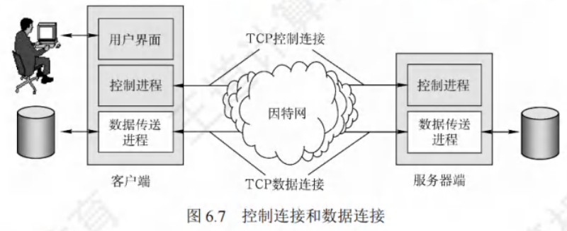
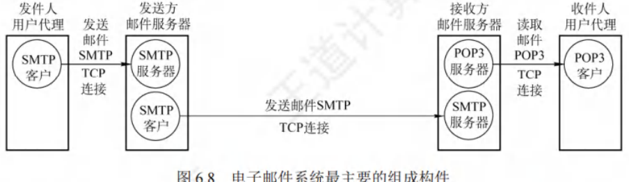
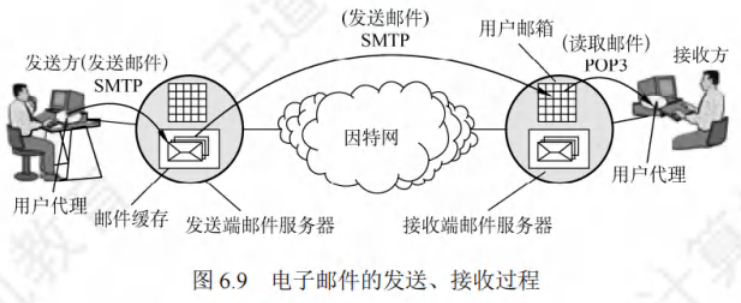
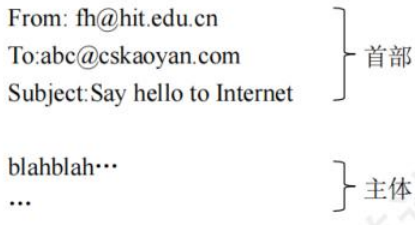
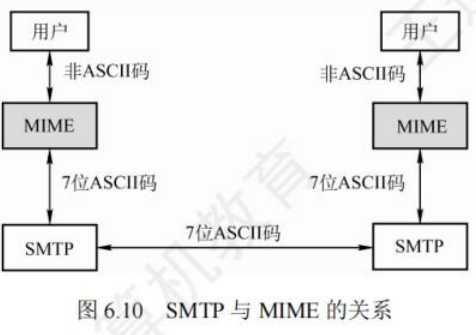
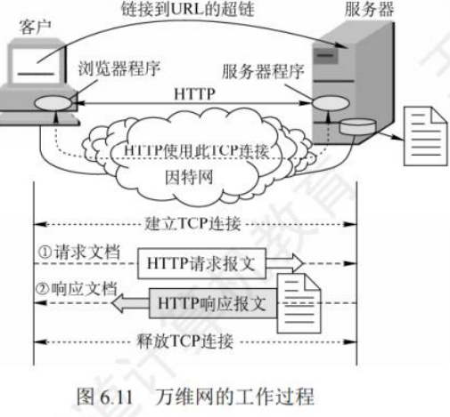
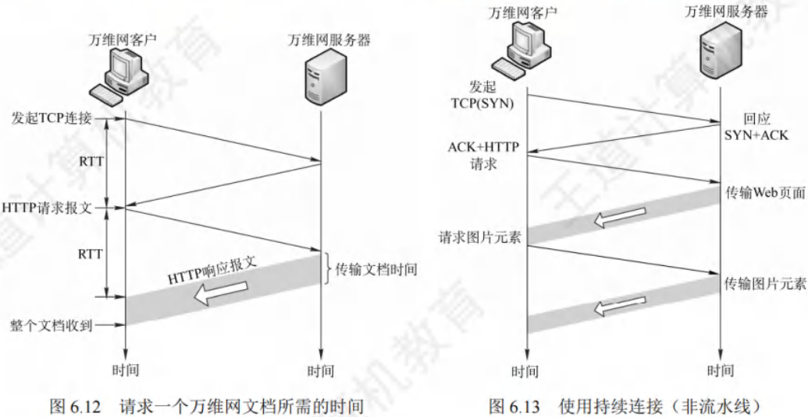
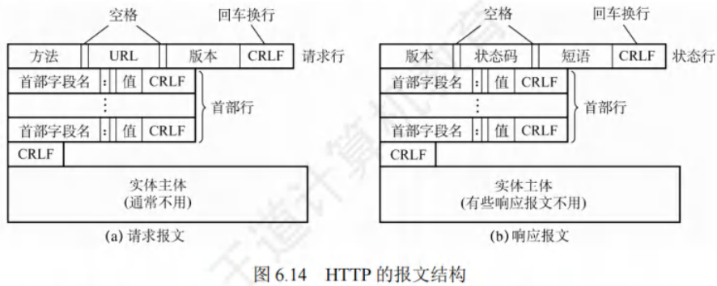
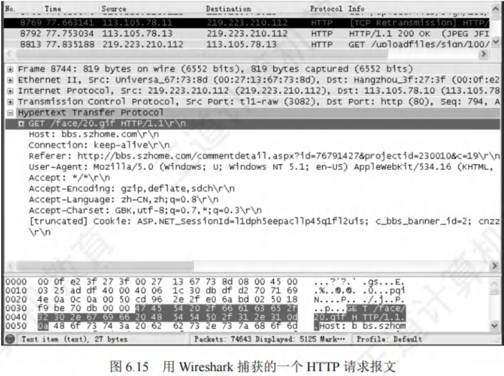
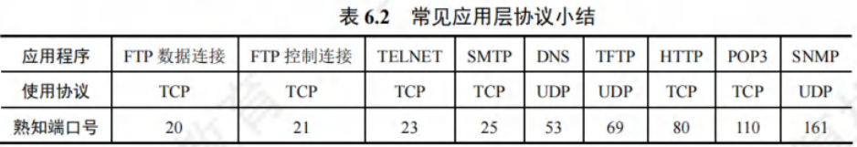

应用层协议
[toc]
文件传输协议
FTP的工作原理
文件传输协议（File Transfer Protocol, FTP）是因特网上应用极为广泛的文件传输协议。
- 特点：提供交互式访问，支持客户指定文件类型、格式及设置存取权限，还能屏蔽各计算机系统细节，适用于异构网络中任意计算机间的文件传输。
- 功能：
- 实现不同主机系统（硬件、软件体系均可不同）间的文件传输能力。
- 以用户权限管理方式，赋予用户对远程FTP服务器文件的管理能力。
- 通过匿名FTP方式，实现公用文件共享。
FTP采用客户/服务器工作模式，借助TCP可靠传输服务。一个FTP服务器进程可同时服务多个客户进程，其服务器进程由两部分构成：
- 主进程：负责接收新请求。
- 从属进程：处理单个请求。
工作步骤：
- 打开熟知端口21（控制端口），以便客户进程连接。
- 等待客户进程发送连接请求。
- 启动从属进程处理客户请求。从属进程处理完请求后终止，回到等待状态，继续接收其他客户进程请求。主进程与从属进程并发执行。
FTP服务器在整个会话期间需保留用户状态信息，尤其要将指定用户账户与控制连接关联，并追踪用户在远程目录树中的当前位置。
控制连接与数据连接
FTP工作时使用两个并行的TCP连接（见图6.7）：

控制连接(服务器端口号21)
- 作用：服务器监听21号端口，等待客户连接，此连接用于传输控制信息（如连接请求、传送请求等），但不传输文件。客户发出的传送请求通过控制连接发送给服务器端控制进程，且在整个会话期间一直保持打开状态，传输文件时也可利用它（如客户中途发送中止传输命令）。
数据连接(服务器端口号20)
- 作用：服务器端控制进程收到客户文件传输请求后，创建“数据传送进程”和“数据连接”。数据连接用于连接客户端和服务器端的数据传送进程，由数据传送进程完成文件传送，传送完毕后关闭连接并结束运行。
- 传输模式：
- 主动模式PORT：客户端连接到服务器21端口登录，读取数据时，客户端随机开放端口并告知服务器，服务器通过20端口与客户端开放端口连接并发送数据。
- 被动模式PASV：客户端读取数据时，发送PASV命令给服务器，服务器本地随机开放端口并告知客户端，客户端再连接到服务器开放端口进行数据传输。
- 总结：采用PORT还是PASV模式由客户端决定。主动模式是“服务器”连接“客户端”端口传送数据；被动模式是“客户端”连接“服务器”端口传送数据。若无特别说明，默认采用主动模式。
由于FTP使用分离的控制连接，其控制信息是带外（Out-of-band）传送的。使用FTP修改服务器文件时，需先将文件传至本地，修改后再传回原服务器，耗时较多。
网络文件系统（NFS）思路不同，它允许进程打开远程文件，并在文件特定位置读写数据，用户可只复制大文件的小片段，无需复制整个文件。
电子邮件
电子邮件系统的组成结构

电子邮件属于异步通信方式，通信时无需双方同时在线。电子邮件将邮件发送至收件人使用的邮件服务器，并存储在收件人的邮箱中，收件人可随时上网至其邮件服务器读取。
一个电子邮件系统主要由三个构件组成，如图6.8所示：
- 用户代理（User Agent, UA）：作为用户与电子邮件系统的接口，为用户提供友好界面用于发送和接收邮件。至少具备撰写、显示和邮件处理功能。常见的用户代理是运行在PC上的程序（如电子邮件客户端软件），像Outlook和Foxmail等。
- 邮件服务器：负责邮件的发送与接收，同时向发件人反馈邮件传送状态（已交付、被拒绝、丢失等）。邮件服务器以客户/服务器模式工作，且能同时扮演客户和服务器角色。例如，邮件服务器A向B发送邮件时，A是SMTP客户，B是SMTP服务器；反之，B向A发送邮件时，角色互换。
- 电子邮件使用的协议：
- 邮件发送协议：用于用户代理向邮件服务器发送邮件或在邮件服务器之间传输邮件，如SMTP。SMTP采用“推”（Push）的通信方式，即用户代理向邮件服务器发送邮件及在邮件服务器间传输时，SMTP客户将邮件“推”至SMTP服务器。
- 邮件读取协议：用于用户代理从邮件服务器读取邮件，如POP3。POP3采用“拉”（Pull）的通信方式，即用户读取邮件时，用户代理向邮件服务器发出请求，“拉”取用户邮箱中的邮件。

电子邮件的收发过程如下：
- 撰写邮件：发件人调用用户代理撰写和编辑待发送邮件。
- 发送邮件：邮件撰写完成后，发件人点击“发送邮件”按钮，后续工作由用户代理负责，其使用SMTP将邮件传送给发送端邮件服务器。
- 排队等待：发送端邮件服务器将邮件放入邮件缓存队列，等待发送。
- 传输邮件：发送端邮件服务器的SMTP客户与接收端邮件服务器的SMTP服务器建立TCP连接，然后将邮件缓存队列中的邮件依次发送。注意，邮件直接传送给接收端邮件服务器，不在互联网中间邮件服务器停留。
- 接收存储：运行在接收端邮件服务器中的SMTP服务器进程收到邮件后，将其放入收件人的用户邮箱，等待收件人读取。
- 收取邮件：收件人准备收信时，调用用户代理，使用POP3（或IMAP）协议从接收端邮件服务器的用户邮箱中取回邮件（若邮箱中有邮件）。
电子邮件格式与MIME
电子邮件格式
电子邮件由信封和内容两大部分构成，其中邮件内容又细分为首部和主体。RFC 822规定了邮件首部格式，主体部分则由用户自由撰写。用户完成首部撰写后，邮件系统会自动提取信封所需信息并填写，无需用户手动操作。
邮件内容的首部包含多个首部行，每个首部行由“关键字:值”组成，部分关键字是必需的，部分可选。其中，最重要的关键字有：
- To：必填关键字，后面需填入一个或多个收件人的电子邮件地址。地址格式为“收件人邮箱名@邮箱所在主机的域名”，例如“abc@cskaoyan.com”，且邮箱名在对应的邮件服务器上必须唯一，以此保证邮件地址在整个因特网上的唯一性。
- Subject：可选关键字，作为邮件主题，用于反映邮件主要内容。
- From：同样是必填关键字，但通常由邮件系统自动填入。首部与主体之间以一个空行分隔。
典型邮件内容展示如下，首部与主体之间用一个空行分割：

多用途因特网邮件拓展
由于SMTP仅能传送7位ASCII码文本邮件，对于许多非英语国家文字（如中文、俄文，以及带重音符号的法文或德文等），以及可执行文件和其他二进制对象都无法传送。因此，多用途因特网邮件扩展（Multipurpose Internet Mail Extensions, MIME）应运而生。
MIME既未改动SMTP，也未将其取代。当发送端邮件包含非ASCII码数据时，不能直接用SMTP传送，需先通过MIME转换，将非ASCII码数据转为ASCII码数据后，方可使用SMTP传输。接收端则使用MIME对收到的ASCII码数据进行逆转换，从而获取包含非ASCII码数据的邮件。MIME与SMTP的关系如下图所示：

MIME主要包含以下三部分内容：
- 5个新的邮件首部字段：分别为MIME版本、内容描述、内容标识、传送编码和内容类型。
- 定义邮件内容格式：对多媒体电子邮件的表示方法进行标准化。
- 定义传送编码：能够对任何内容格式进行转换，且不会被邮件系统改变。
SMTP和POP3
SMTP
简单邮件传输协议（Simple Mail Transfer Protocol, SMTP），用于实现可靠且高效的电子邮件传输，控制两个通信的SMTP进程交换信息。
SMTP采用客户/服务器模式，负责发送邮件的是SMTP客户，接收邮件的是SMTP服务器 。它基于TCP连接，端口号为25 。SMTP通信分为以下三个阶段：
- 连接建立：发件人的邮件进入发送方邮件服务器的邮件缓存后，SMTP客户定时扫描缓存。若发现邮件，便与接收方邮件服务器的SMTP服务器建立TCP连接（SMTP服务器熟知端口号25）。连接建立后，接收方SMTP服务器回应“220 Service ready（服务就绪）”，接着SMTP客户发送HELO命令并附上发送方主机名。需注意，SMTP不借助中间邮件服务器，TCP连接直接在发送方和接收方邮件服务器间建立，不受距离和路由器数量影响。若接收方邮件服务器故障无法建立连接，发送方邮件服务器需等待后重试。
- 邮件传送：连接建立后开始传送邮件。以MAIL命令起始，后接发件人地址，如“MAIL FROM:<fh@hit.edu.cn>”。若SMTP服务器准备好接收邮件，回复“250 OK”。随后跟一个或多个RCPT命令，格式为“RCPT TO:<收件人地址>”，每个RCPT命令都会收到SMTP服务器的响应，如“250 OK”或“550 No such user here（无此用户）”。RCPT命令用于确认接收方系统是否准备好接收邮件，避免因地址错误浪费通信资源。收到“OK”回复后，客户端使用DATA命令表明开始传送邮件内容，正常情况下，SMTP服务器返回“354 Start mail input; end with
. ”， 表示回车换行，此时SMTP客户可传送邮件内容，并以 . 表示内容结束。 - 连接释放：邮件发送完毕，SMTP客户发送QUIT命令，SMTP服务器返回“221（服务关闭）”，同意释放TCP连接，邮件传送过程结束。
POP3和IMAP
- POP3：邮局协议（Post Office Protocol, POP）是简单但功能有限的邮件读取协议，当前版本为POP3。它采用客户/服务器模式，在传输层使用TCP，端口号110。接收方用户代理运行POP客户程序，接收方邮件服务器运行POP服务器程序。POP有两种工作方式：
- “下载并保留”：用户从邮件服务器读取邮件后，邮件仍保留在服务器，可再次读取。
- “下载并删除”：邮件读取后即从服务器删除。
- IMAP：因特网报文存取协议（Internet Message Access Protocol, IMAP）比POP复杂。IMAP为用户提供创建文件夹、在不同文件夹间移动邮件及在远程文件夹查询邮件等联机命令，IMAP服务器维护会话用户的状态信息。其另一特性是允许用户代理只获取报文部分内容，如只读取报文首部或多部分MIME报文的一部分，适用于低带宽场景，用户无需取回邮箱中的所有大邮件（如含大量音频或视频的邮件）。
此基于万维网的电子邮件，如Hotmail、Gmail等。这类邮件的特点是，用户浏览器与邮件服务器间的邮件发送或接收使用HTTP，仅在不同邮件服务器间传送邮件时使用SMTP。
万维网
WWW的概念与组成结构
万维网（World Wide Web, WWW）是分布式、联机式的信息存储空间。其中，每一个有用事物都被视为一种“资源”，并由全域的统一资源定位符（URL）标识。这些资源通过超文本传输协议（HTTP）传送给用户，用户通过点击链接获取资源。
万维网借助链接，能便捷地从一个站点访问另一个站点，主动按需获取丰富信息。超文本标记语言让页面设计可轻松通过超链接，从本页面链接到因特网上任意页面，并在计算机屏幕显示。
万维网的内核由三个标准构成：
-
统一资源定位符（URL）：负责标识万维网上各类文档，使每个文档在整个万维网范围内拥有唯一标识符。
-
其一般形式为
<协议>://<主机>:<端口>/<路径>。 -
<协议>：常见如http、ftp等，用于表明获取万维网文档所采用的协议。 -
<主机>：指存放资源的主机在因特网中的域名或IP地址。 -
<端口>和<路径>：有时可省略。URL不区分大小写。
-
-
超文本传输协议（HTTP）：应用层协议，基于TCP连接实现可靠传输，是万维网客户程序与服务器程序交互必须严格遵循的协议。
-
超文本标记语言（HTML）：一种文档结构标记语言，利用约定标记描述页面上文字、声音、图像、视频等各种信息及其格式。
万维网采用客户/服务器模式工作。浏览器是用户主机上的万维网客户程序，万维网文档所在主机运行服务器程序，此主机即为万维网服务器。
工作流程：
- 连接与请求：Web用户使用浏览器（指定URL）与Web服务器建立连接，并发送浏览请求。
- 转换与响应：Web服务器将URL转换为文件路径，向Web浏览器返回信息。
- 关闭连接：通信完成后，关闭连接。
万维网是众多网络站点和网页的集合，构成了因特网的主要部分（因特网还包含电子邮件、Usenet和新闻组）。
超文本传输协议（HTTP）
HTTP定义了浏览器（万维网客户进程）请求万维网文档以及服务器传送文档给浏览器的方式。
从层次角度，HTTP是面向事务（Transaction-oriented）的应用层协议，规定了浏览器与服务器间请求和响应的格式与规则，是万维网可靠交换文件（包括文本、声音、图像等多媒体文件）的重要基础。
HTTP的操作过程
从协议执行角度看，浏览器访问WWW服务器，首先需完成对WWW服务器的域名解析。获取服务器IP地址后，浏览器通过TCP向服务器发送连接建立请求 。
每个万维网站点都有服务器进程，持续监听TCP的80端口（默认）。监听到连接请求后，与浏览器建立TCP连接。之后，浏览器向服务器发送获取某个Web页面的HTTP请求，服务器收到请求，构建所需Web页信息，通过HTTP响应返回给浏览器，浏览器解释信息并将Web页显示给用户，最后释放TCP连接。

以访问清华大学网站为例，用户单击鼠标后按顺序发生以下事件：
- URL分析：浏览器分析链接指向页面的URL（http://www.tsinghua.edu.cn/chn/index.htm）。
- DNS请求：浏览器向DNS请求解析www.tsinghua.edu.cn的IP地址。
- DNS解析：域名系统DNS解析出清华大学服务器的IP地址。
- TCP连接建立：浏览器与该服务器建立TCP连接（默认端口号80）。
- HTTP请求发送：浏览器发出HTTP请求：GET /chn/index.htm。
- HTTP响应接收：服务器通过HTTP响应把文件index.htm发送给浏览器。
- TCP连接释放：释放TCP连接。
- 页面显示：浏览器解释文件index.htm，并将Web页显示给用户。
上述是简化过程，实际涉及TCP/IP体系结构中应用层的DHCP、DNS和HTTP，传输层的UDP和TCP，网际层的IP和ARP，数据链路层的CSMA/CD或PPP（若涉及ISP接入或广域网传输）。
HTTP的特点
- 基于TCP保证可靠传输：HTTP使用TCP作为传输层协议，确保数据可靠传输，自身无需考虑数据丢弃后的重传问题。但需注意，HTTP本身无连接，虽使用TCP连接，通信双方交换HTTP报文前无需先建立HTTP连接。
- 无状态特性：HTTP是无状态的，即同一个客户第二次访问同一服务器页面时，服务器响应与首次相同，因为服务器不记得曾服务过该客户。此特性简化了服务器设计，更易支持大量并发请求。实际应用中，常采用Cookie加数据库方式跟踪用户活动，如记录用户最近浏览商品。Cookie工作原理如下：
- 用户初次访问使用Cookie的网站，服务器为用户生成唯一Cookie识别码（如“12345”），并以此为索引在后端数据库创建项目记录用户访问信息。
- 服务器在给用户的响应报文中添加Set - cookie首部行“Set - cookie:12345”，用户收到响应后，在其管理的特定Cookie文件中添加该服务器主机名和Cookie识别码。
- 用户再次浏览该网站时，取出识别码，在请求报文中添加Cookie首部行“Cookie:12345”，服务器依据识别码从数据库查询用户活动记录，执行个性化操作，如按历史浏览记录推荐新商品。
- 连接方式：HTTP既支持非持续连接（HTTP/1.0），也支持持续连接（HTTP/1.1支持）。
- 非持续连接：每个网页元素对象（如JPEG图形、Flash等）传输都需单独建立TCP连接。请求一个万维网文档所需时间为文档传输时间（与文档大小成正比）加上两倍往返时间RTT（一个RTT用于TCP连接，另一个RTT用于请求和接收文档）。每请求一个对象都产生2×RTT开销，且每次新建TCP连接都要分配缓存和变量，加重万维网服务器负担。
- 持续连接：万维网服务器发送响应后保持连接，同一客户和服务器可在该TCP连接上传送后续HTTP请求和响应报文。HTTP/1.1默认使用持续连接，其又分为非流水线和流水线两种工作方式。
- 非流水线方式：客户收到前一个响应后才能发出下一个请求，服务器发送完一个对象后，TCP连接空闲，浪费服务器资源。
- 流水线方式：客户可连续发出对各个对象的请求，服务器连续响应。若所有请求和响应连续发送，引用所有对象共经历1个RTT延迟，而非每个对象都有1个RTT延迟，减少了TCP连接空闲时间，提高效率。不过，流水线方式中，服务器每个RTT连续发送的数据量受TCP发送窗口限制。

HTTP的报文结构
HTTP是面向文本的（Text-Oriented），报文中每个字段都是ASCII码串，且字段长度不定。HTTP报文分为两类：
- 请求报文：由客户向服务器发送，如图6.14(a) 所示。
- 响应报文：从服务器返回给客户，如图6.14(b) 所示。

从图6.14可见，两种报文都由三部分构成，区别在于开始行不同。
- 开始行：请求报文中称请求行，响应报文中为状态行。开始行的三个字段以空格分隔，结尾“CR”和“LF”分别表示“回车”和“换行”。
- 首部行：用于说明浏览器、服务器或报文主体的相关信息。首部可有若干行，也可省略。每行首部字段都有字段名和对应值，行尾以“回车”和“换行”结束。整个首部行结束后，用一空行与实体主体分隔。
- 实体主体：请求报文中一般较少使用，响应报文中也可能不存在该字段。
请求报文的“请求行”包含三个内容：方法、请求资源的URL及HTTP版本。其中，“方法”是对请求对象执行的操作，类似命令。
| 方法（操作） | 意义 |
|---|---|
| GET | 请求读取由URL标识的信息 |
| HEAD | 请求读取由URL标识的信息的首部 |
| POST | 给服务器添加信息（如注释） |
| CONNECT | 用于代理服务器 |
| PUT | 向指定资源位置上传其最新内容 |
| DELETE | 删除指明的URL所标识的资源 |
以下是典型的HTTP请求报文示例：
1 | |
第1行是请求行，采用相对URL，因后续首部行给出了服务器域名。第3行表明使用持续连接，即浏览器要求服务器在发送完文档后保持TCP连接，若使用非持续连接，对应首部行应为“Connection: close”。
HTTP响应报文的第1行是状态行，包含三个内容：HTTP版本、状态码、解释状态码的短语。以下是HTTP响应报文中常见的三种状态行示例：
HTTP/1.1 202 Accepted{接受请求}HTTP/1.1 400 Bad Request{错误的请求}HTTP/1.1 404 Not Found{找不到页面}
HTTP请求报文举例

根据报文结构定义，在图6.15的以太网数据帧中：
- 第1 - 6字节为目的MAC地址（默认网关地址），即
00 - 0f - c2 - 3f - 27 - 3f。 - 第7 - 12字节为本机MAC地址，即
00 - 27 - 13 - 67 - 73 - 8d。 - 第13 - 14字节
08 - 00为类型字段，表示上层使用IP数据报协议。 - 第15 - 34字节（共20B）为IP数据报的首部，其中第27 - 30字节为源IP地址，即
db - df - d2 - 70，转换为十进制是219.223.210.112；第31 - 34字节为目的IP地址，即71 - 69 - 4e - 0a，转换为十进制是113.105.78.10。 - 第35 - 54字节（共20B）为TCP报文段的首部。
- 从第55字节开始为TCP数据部分（阴影部分），即应用层传递下来的数据（此例中为请求报文），
GET对应请求行的方法，face/20.gif对应请求行的URL，HTTP/1.1对应请求行的版本。左侧数字是对应字符的ASCII码，如'G' = 0x47、'E' = 0x45、'T' = 0x54等。
